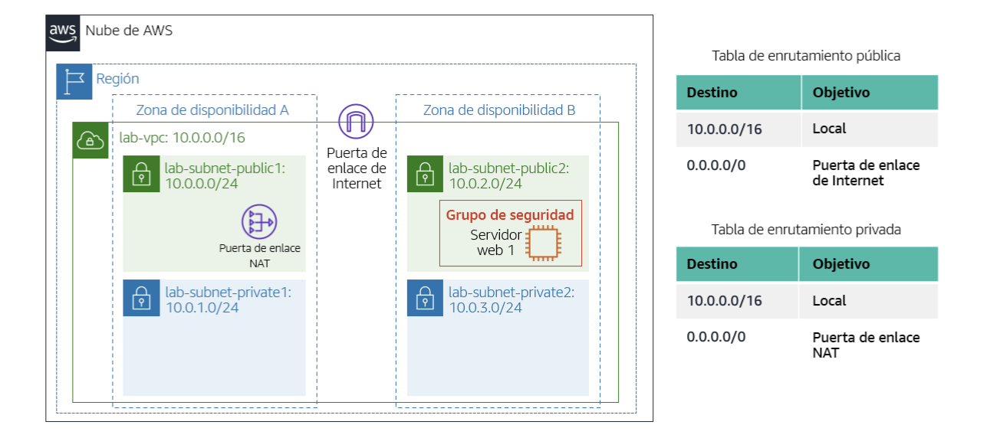

RETO BIG DATA
GRUPO 12 | Curso 2025/2026
Integrantes: Elisa, Tomás y Kike
Entregable PARCIAL - Servicios AWSTabla de Servicios de AWS
Hemos recopilado las descripciones de los servicios esenciales de AWS, incluyendo 6 servicios adicionales a los 8 propuestos.
| Servicio | Descripción |
|---|---|
| EC2 |
Amazon EC2 (Elastic Compute Cloud)
Servicio básico de la nube AWS. En EC2 se crean las máquinas virtuales en la nube. Permite su creación de forma rápida. Además, si la máquina virtual se queda corta, se puede reescalar añadiendo más potencia fácilmente. |
| RDS (Asignado a Elisa) |
Amazon RDS (Relational Database Service)
Servicio de BBDD relacionales. Soporta varios motores de bases de datos como MySQL, PostgreSQL, Oracle, SQL Server y Amazon Aurora. Amazon te “alquila” bases de datos y se encarga de las actualizaciones del software, copia de seguridad y escalado. El usuario solo se encarga de los datos, las consultas y la app que usa la dicha base de datos. |
| S3 (Asignado a Elisa) |
Amazon S3 (Simple Storage Service)
Lugar donde puedo subir PDF, fotos, videos, etc y lo puedo vincular a mi pagina web. (= dropbox o google drive). En definitiva, servicio de almacenamiento de objetos. Muy barato (en comparación con EBS) y escalable. Es como un almacén gigante con espacio ilimitado. AWS cuida la seguridad. |
| EBS (Asignado a Elisa) |
Amazon EBS (Elastic Block Store)
Elastic Block Store. Es el disco duro de tu PC (EC2), pero en internet. Permite crear discos duros virtuales de diferentes tamaños y tipos (SSD, HDD) según las necesidades de rendimiento y almacenamiento y se pueden conectar a las instancias EC2. |
| DynamoDB (Asignado a Elisa) |
Amazon DynamoDB (Base de Datos NoSQL)
Base de Datos NoSQL super rápida y que escala automáticamente. Ideal para aplicaciones que requieren baja latencia y alta disponibilidad. Totalmente gestionada por AWS, lo que significa que no tienes que preocuparte por la administración del servidor o la configuración. |
| Cloudfront (Asignado a Elisa) |
Amazon CloudFront (CDN: Global Content Delivery Network)
Lleva el contenido más cerca de los usuarios. |
| Amazon EKS (Asignado a Tomás) |
Amazon EKS Anywhere (Elastic Kubernetes Service)
Es un servicio de Kubernetes administrado que hace que sea mucho más fácil ejecutar, escalar y gestionar contenedores en AWS, sin la necesidad de configurar manualmente el clúster. EKS se encarga de automatizar la creación de nodos, la actualización del clúster y la integración con servicios como IAM y CloudWatch. Esto permite desplegar aplicaciones en contenedores con alta disponibilidad y balanceo de carga. Es una opción perfecta para equipos que ya están familiarizados con Kubernetes y desean aprovechar la infraestructura segura y escalable que ofrece AWS. Además, solo pagas por los nodos y recursos que realmente utilizas. |
| AWS Lambda (Asignado a Tomás) |
Amazon Lambda (Run Code Without Thinking About Servers)
Imagina un servicio de computación sin servidor que ejecuta tu código automáticamente en respuesta a eventos, ¡sin que tengas que preocuparte por administrar servidores! Solo pagas por el tiempo que tu código está en ejecución y la memoria que utiliza. Es perfecto para automatizar tareas, crear microservicios o procesar datos en tiempo real. Puedes activarlo desde otros servicios como S3, API Gateway, DynamoDB, y más, o incluso hacer llamadas directas. Además, ofrece una escalabilidad impresionante, requiere poco mantenimiento y tiene una arquitectura súper flexible. |
| VPC (Servicio Añadido - Tomás) |
Amazon VPC (Virtual Private Cloud)
AWS VPC, este servicio te permite crear una red privada virtual dentro de AWS, que es segura y está aislada para proteger tus recursos en la nube. Tú tienes el control total sobre las subredes, los rangos de IP, las tablas de enrutamiento y las reglas de seguridad. Además, puedes conectar servicios públicos, como ALB, con servicios privados, como RDS o ECS. También tienes la opción de enlazarla con tu red local a través de VPN o Direct Connect. Sin duda, es la base de cualquier arquitectura bien estructurada y segura en AWS. |
| Route 53 (Servicio Añadido - Tomás) |
Amazon Route 53 (DNS Web Service)
Servicio de DNS gestionado que convierte nombres de dominio como lasalle.es en direcciones IP. Se utiliza para dirigir el tráfico de los usuarios hacia aplicaciones, balanceadores o servicios en AWS. Permite establecer políticas de enrutamiento geográfico, de latencia o de failover. También ofrece la opción de registrar dominios y verificar su disponibilidad. Es rápido, confiable y se integra sin problemas con otros servicios de AWS como CloudFront o S3. |
| CloudWatch (Servicio Añadido - Kike) |
Amazon CloudWatch (Monitoring and Observability Service)
Servicio de monitoreo y observabilidad que proporciona en tiempo real datos de rendimiento llamados métricas sobre los recursos y aplicaciones en AWS. Estas métricas se pueden ver en paneles personalizables, y se pueden configurar alarmas que se activan cuando ciertas métricas (como el uso de CPU, RAM) superan un umbral que se establezca o cuando hay errores. Es decir vigila los difrentes flags que se le indiquen generando alertas que se hayan configurado con la finalidad de detectar problemas y optimizar recursos (y con ello costes asociados). Características clave:
Un caso de uso típico es monitorizar el rendimiento de una aplicación web desplegada en AWS, ver si necesita escalar o no, y recibir alertas si hay problemas de disponibilidad o rendimiento. En entornos no cloud, podría ser similar a combinar Grafana y Nagios. |
| AWS IAM (Servicio Añadido - Kike) |
AWS IAM (Identity and Access Management)
Amazon IAM features: MFA AWS IAM es un servicio que gestiona el acceso a los recursos de AWS. Permite crear usuarios, grupos, roles y políticas para definir quién puede hacer qué, por lo que es un sistema de control de acceso, y permite un control de acceso granular ya que se integra en casi todos los servicios de AWS. Características clave:
Un caso de uso típico de IAM es gestionar el accesos diferenciados a los recursos de AWS entre diferentes equipos dentro de una organización. Se podría comparar con Microsoft Active Directory (AD) en entornos no cloud. |
| SNS (Servicio Añadido - Kike) |
Amazon SNS (Simple Notification Service)
AWS SNS es un servicio de publicación y suscripción. completamente administrado para mensajería A2A y A2P. Permite desacoplar los sistemas de envío y recepción de información. Envía notificaciones a varios suscriptores (correos, SMS o funciones Lambda) a partir de eventos o alarmas. Funciona bajo un modelo de publicación-suscripción y consta de tres componentes principales:
Características clave:
Un caso de uso típico de SNS es la comunicación y notificaciones en tiempo real entre diferentes componentes de una aplicación distribuida. Servicios parecidos no cloud serían RabbitMQ o Apache Kafka. |
| Security Hub (Servicio Añadido - Kike) |
AWS Security Hub (Centro de Gestión de Seguridad)
Es un servicio que actúa como un centro de gestión de información y eventos de seguridad (SIEM). Consolida, normaliza y prioriza hallazgos o alertas de seguridad (conocidas como findings) de múltiples servicios de AWS y soluciones de terceros, presentándolos en un panel unificado lo que simplifica la gestión de la seguridad y ayuda tener una visión completa del estado de seguridad en todas las cuentas y regiones, permitiendo identificar los problemas y la respuesta a escala. Características clave:
El principal caso de uso es en entornos multi-cuenta de AWS para centralizar, priorizar y gestionar un gran volumen de alertas de seguridad generadas por diferentes servicios. Servicios Similares No Cloud serían: Splunk Enterprise Security, IBM QRadar o ArcSight. |
Análisis del Diagrama ECS/RDS
Análisis detallado del diagrama de arquitectura propuesto, que muestra la combinación de servicios de contenedores (ECS) y bases de datos relacionales gestionadas (RDS) en alta disponibilidad.

-
¿Están todos los servicios
correctamente ubicados?
Si, es un esquema robusto, seguro y coherente, detallo el flujo y el diseño del esquema:
- Se accede a través de Route53 y CloudFront, que se encargan del DNS y el CDN.
- El tráfico se dirige al Load Balancer (ALB) y luego va hacia los contenedores ECS, donde se ejecuta la aplicación.
- Estos contenedores tienen acceso a las bases de datos RDS (Oracle), que están en redes privadas.
- Además, S3, CloudTrail y CloudWatch se encuentran en una cuenta separada, exclusivamente para auditoría, lo cual es una buena práctica.
- También hay un Internet Gateway y un VPN Gateway bien configurados para facilitar el acceso tanto público como privado.
-
¿Por qué no se usa EC2 y se usa ECS?
¿Diferencias?
Porque ECS es un servicio de diseñado para orquestar contenedores (normalmente Docker) y los ejecuta y administra de forma automática y escalable, lo que simplifica la implementación y gestión de aplicaciones en contenedores, te evita tener que administrar máquinas virtuales o preocuparte por cuántas instancias necesitas.
Mientras que con EC2, tienes que gestionar todo el sistema operativo, las actualizaciones, la seguridad y la escalabilidad manualmente, y sería el equivalente a alquilar un servidor físico (IaaS), y ECS sería como contratar un servicio de hosting gestionado para tus aplicaciones en contenedores.
ECS es ideal para aplicaciones modernas basadas en microservicios y contenedores, mientras que EC2 es más adecuado para aplicaciones tradicionales que requieren un control total sobre el entorno del servidor.
ECS utiliza instancias EC2 (o AWS Fargate) como infraestructura subyacente para ejecutar los contenedores. -
¿Cuantas redes privadas hay?
En el diagrama hay dos zonas de disponibilidad, etiquetadas como A y B cada una de estas zonas cuenta con:
- Un ECS, donde se ejecuta la aplicación.
- Una base de datos RDS (Oracle).
Ambos servicios están ubicados en subredes privadas (no accesibles desde Internet) representadas con un candado, solo se puede hacer a través de una VPN o un NAT Gateway que actúa como intermediario.
Por lo tanto, son dos redes privadas en total, una en cada zona de disponibilidad, lo que proporciona redundancia y alta disponibilidad. para asegurar que si una zona falla, la otra puede seguir operando sin interrupciones. -
¿En cuantos CPDs se ubica el
servicio?
En AWS, un CPD (Centro de Procesamiento de Datos) equivale a una Availability Zone (AZ) dentro de una región.
En el diagrama, el servicio está desplegado en dos zonas de disponibilidad diferentes:
- Una en la Availability Zone A
- Otra en la Availability Zone B
Por tanto, el servicio está desplegado en 2 CPDs.
Despliegue de Servidor Web Básico (Lab 3)
Esta sección documenta la creación de la primera instancia EC2 para el despliegue de un servidor web Apache, poniendo especial énfasis en la configuración de seguridad y la capacidad de reescalado.
[CS01] Capturas de EC2 con Protección
Explicación:
- Como marca el laboratorio, poner la protección contra terminación en la instancia EC2
creada para evitar borrados accidentales (vistas 1-2).
- En los detalles de la instancia EC2, se puede observar que la protección contra
terminación está activada (vistas 3).
- Sí se termina la instancia EC2 desde la consola, aparece un mensaje de advertencia
indicando que la instancia tiene protección contra terminación activada (vista 4).
[CS02] Capturas de la página web en el navegador
Explicación:
- Capturas de la página web "Hello World" desplegada de distintas instancias EC2
levantadas por este grupo.

[CS03] Capturas del monitoreo de la instancia
Explicación:
- Capturas de pantalla de la instancia de los distintos EC2 creados dentro del
diagnóstico de instancias (vistas 1-3).
- Captura de los registros del sistema del diagnóstico de instancias de uno de los EC2
(vista 4).
[CS04] Capturas del grupo de seguridad HTTP
Explicación:
- Capturas de pantalla del grupo de seguridad creado para permitir el tráfico HTTP
(puerto 80) hacia la instancia EC2 desde cualquier origen (vistas 1-2).
- Capturas donde se puede observar la regla de entrada de la instancia que permite el
tráfico HTTP (puerto 80) desde cualquier dirección IP (vistas 3-4).
[CS05] Capturas del reescalado de la instancia
Explicación:
- Partiendo de una instancia EC2 t2.micro y 8 GB de almacenamiento EBS (vista 1).
- Se tiene que hacer el reescalado de la instancia a t2.small y 10 GB de almacenamiento
EBS.
- Para el tipo de instancia, ir a la opción de "Acciones de instancia" y luego a
"Cambiar tipo de instancia".
- Para el tamaño del volumen EBS, ir a la opción de "Acciones de volumen" y luego a
"Modificar volumen" (visatas 2-3).
- Aplicar cambios (vista 4).
- Se puede observar el nuevo tamaño del volumen EBS (vista 5-6).
- Se levanta la instancia de nuevo y se puede observar el nuevo tipo de instancia
t2.small y el nuevo tamaño del almacenamiento EBS de 10 GB (vista 7).
Procedimiento Detallado del Lab 6 (ELB y Auto Scaling Group)
Documentación del Laboratorio 6, donde se implementó un servicio web autoescalado y balanceado. Se utilizó un Elastic Load Balancer (ELB) para distribuir la carga y un Auto Scaling Group (ASG) para garantizar la alta disponibilidad y la elasticidad del servicio.
Diagrama de Arquitectura (ELB y ASG)

Capturas [CS01] Creación de la AMI
Explicación:
Capturas del proceso de creación de una AMI (Amazon Machine Image) a partir de una
instancia EC2 existente llamada "WebServer1":
- Menú para seleccionar la opción de crear imagen (vista 1).
- Selección de la imagen y configuración de los detalles (vista 2).
- Visualización de la nueva AMI en la consola de AWS (vista 3).
Captura [CS02] Infraestructura VPC creada
Explicación:
Captura del diagrama de la infraestructura VPC creada para el despliegue del ELB y el
Auto Scaling Group
Muestra las subredes públicas y privadas, así como los componentes principales.
Capturas [CS03] ELB creado
Explicación:
- Captura de la confirmación de la creación del ELB (Elastic Load Balancer) (vista 1).
- Captura del ELB aprovisionándose después de haber sido creado (vista 2).
Capturas [CS04] Autoescaling creado
Explicación:
Capturas del proceso de configuración y creación del Auto Scaling Group (ASG):
- Configurar grupo de autoescalado y plantilla de lanzamiento (vista 1).
- Configuración de red y subredes (vista 2).
- Integración con otros servicios y asignación al ELB (Elastic Load Balancer) (vista
3).
- Configuración políticas de escalado basadas en métricas de CPU (vistas 4-6).
- Captura de la creación del grupo de autoescalado (vista 7).
Capturas [CS05] Alarmas en Cloudwatch
Explicación:
Capturas de las alarmas configuradas en CloudWatch para el Auto Scaling Group:
- Vista alarmas configuradas para escalar hacia arriba (vista 1).
- Vista del monitor de carga de CPU utilizado para la alarma (vista 2).
- Vista de aviso de alarma cuando se supera el umbral (vista 3).
Laboratorio Elegido: Creación y Configuración de una VPC
Hemos seleccionado el laboratorio enfocado en la creación y configuración de una Amazon VPC (Virtual Private Cloud) para consolidar los conocimientos sobre el aislamiento y la topología de red en AWS. A continuación, se detalla el proceso seguido con capturas de pantalla y su explicación.
Pasos CS01
Vamos a utilizar Amazon Virtual Private Cloud (VPC) para crear su propia VPC y agregar componentes adicionales con el fin de producir una red personalizada. También creará un grupo de seguridad. A continuación, deberá configurar y personalizar una instancia de EC2 para ejecutar un servidor web e iniciará la instancia de EC2 para ejecutarse en una subred en la VPC.
Amazon Virtual Private Cloud (Amazon VPC) le permite iniciar recursos de Amazon Web Services (AWS) en una red virtual que haya definido. Dicha red virtual se asemeja mucho a una red tradicional que ejecutaría en su propio centro de datos, con los beneficios de utilizar la infraestructura escalable de AWS. Puede crear una VPC que abarque varias zonas de disponibilidad.
Pasos CS02
Crear dos subredes adicionales para la VPC en una segunda zona de disponibilidad. Tener subredes en varias zonas de disponibilidad en una VPC es útil para implementar soluciones que ofrecen alta disponibilidad.
Después de crear una VPC como ya lo hizo, puede seguir configurándola, por ejemplo, agregando más subredes. Cada subred que crea reside por completo en una zona de disponibilidad.
Pasos CS03
Ahora, configurará esta nueva subred privada para dirigir el tráfico de Internet a la puerta de enlace NAT a fin de que los recursos de la segunda subred privada puedan conectarse a Internet y, a la vez, mantener los recursos privados. Esto se realiza mediante la configuración de una tabla de enrutamiento.
Una tabla de enrutamiento contiene un conjunto de reglas llamadas rutas, que se utilizan para determinar hacia dónde se dirige el tráfico de red. Cada subred de una VPC debe estar asociada a una tabla de enrutamiento, que es la que controla el enrutamiento de la subred.
Pasos CS04
Configurar un grupo de seguridad para la VPC. Un grupo de seguridad actúa como un firewall virtual que controla el tráfico de entrada y salida de las instancias de Amazon EC2.
Pasos CS05
Lanzar una instancia de Amazon EC2 en la subred pública de la VPC y configurar la instancia para que ejecute un servidor web.
Pasos CS06
Resultado final: Acceder al servidor web desde un navegador web utilizando la dirección IP pública de la instancia de EC2.
Capturas [CS01]
Explicación:
Entrar en el Servicio VPC. Creamos una nueva VPC con estas configuraciones:
Capturas [CS02]
Explicación:
- Desde “Subnet” en el panel izquierdo crear una segunda subred publica (vistas
1-2).
- Desde “Subnet” en el panel izquierdo crear una segunda subred privada (vistas
3-4).
Capturas [CS03]
Explicación:
Crear route table y asociarlas a las subredes (privada y publica).
![Capturas [CS03] del laboratorio extra - Vista 2](./img/E4-CS03-011.png)
Captura [CS04]
Explicación:
Configuración security group.
Capturas [CS05]
Explicación:
- Entrar en el servicio EC2 para crear una nueva EC2 instance.
- Initialising instance…
- Instance launched…
![Capturas [CS05] del laboratorio extra - Vista 3](./img/E4-CS05-016.png)
Capturas [CS06]
Explicación:
- Seleccionar el servidor Web Server 1.
- Copiar el DNS publico IPv4.
- Abrir nueva pestaña del navegador web.
![Capturas [CS06] del laboratorio extra - Vista 1](./img/E4-CS06-017.png)